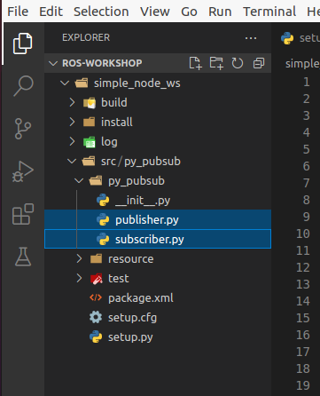

Part 2: Creating Nodes¶
Now that we have some experience with basic nodes, let’s create our own!
One of the largest problems with ROS is it’s complicated file structure. Packages often contain tons of pieces and configuration files, that allow everything to be linked in and created properly. In order to follow this pattern correctly, we are given multiple utilities to aid in the process.
Creating a ROS Package¶
To create a package, we first want to be in a workspace. A workspace is just a folder dedicated to holding multiple ROS packages, and should be a separate folder. This allows for certain commands such as rosdep to be defined and run from a specified location.
Run the following commands to create your workspace:
cd /ros-workshop
mkdir simple_node_ws
cd simple_node_ws
We are now located in our workspace. From here, we can create our package with the following line:
ros2 pkg create --build-type ament_python py_pubsub
This creates a Python ROS Package with the name py_pubsub. If you wish to create a different package, or change the name, that can be done in the command by changing the last argument.
Note
For this workshop, keep the package name as py_pubsub as it will make working with the configuration files much easier.
We now can create the code for our different nodes! For this section, we will be providing the code for the base nodes, and modifications can be made to them. To start, create the publisher.py and subscriber.py files, which can be done by right-clicking on the inner “py-pubsub” folder (or whatever package name you chose), selecting New File, and adding in the name for the file you want to make.
After running these commands, your file structure should look something like this:
The first file is our publisher. It’s primary responsibility is to post information to a topic on the network, which other things can then listen to. Copy the following code into the newly created publisher.py file.
publisher.py¶
# Package dependencies
import rclpy
from rclpy.node import Node
from std_msgs.msg import String
# Package code
class Publisher(Node):
def __init__(self):
# Call into the parent node to create the name of this node
super().__init__('publisher')
# Create a publisher with an assigned "topic" to send data to
self.publisher_ = self.create_publisher(String, 'topic', 10)
# Define how long we want to spend between messages
timer_period = 0.5 # seconds
# Call the "create_timer" function from the Node class, which will execute
# the callback function "timer_callback" every time "timer_period" elapses
self.timer = self.create_timer(timer_period, self.timer_callback)
# Initialize the counter to 0
self.i = 0
def timer_callback(self):
# Create a string to hold our message
msg = String()
# Populate the message with the string we want
msg.data = 'Hello World: %d' % self.i
# Call the publisher in order to send our message to the ROS network
self.publisher_.publish(msg)
# Log what we published
self.get_logger().info('Publishing: "%s"' % msg.data)
# Increment our instance counter
self.i += 1
def main(args=None):
# Initialize the ROS node
rclpy.init(args=args)
# Create a new publisher instance
publisher = Publisher()
# "Spin" to update the nodes
rclpy.spin(publisher)
# Explicitly destroy the node (similar to a deconstructor - optional here)
publisher.destroy_node()
# Shut down the ROS node
rclpy.shutdown()
if __name__ == '__main__':
main()
The second file is our subscriber. It’s primary responsibility is to listen to messages in the ROS network on a specified topic, and to do something with the data once a new message is received. Copy the following code into the newly created subscriber.py file.
subscriber.py¶
# Project dependencies
import rclpy
from rclpy.node import Node
from std_msgs.msg import String
# Project code
class Subscriber(Node):
def __init__(self):
# Call the constructor for the parent Node object with the node name
super().__init__('subscriber')
# Create a subscription to the topic "topic", linked to our callback
# function "listener_callback"
self.subscription = self.create_subscription(
String,
'topic',
self.listener_callback,
10)
# Call this to prevent a warning from it "being unused"
self.subscription
# Define our callback function
def listener_callback(self, msg):
# Log what was received
self.get_logger().info('I heard: "%s"' % msg.data)
def main(args=None):
# Initialize the ROS node
rclpy.init(args=args)
# Create a new publisher instance
minimal_subscriber = Subscriber()
# "Spin" to update the nodes
rclpy.spin(minimal_subscriber)
# Explicitly destroy the node (similar to a deconstructor - optional here)
minimal_subscriber.destroy_node()
# Shut down the ROS node
rclpy.shutdown()
if __name__ == '__main__':
main()
Updating our package.xml¶
Now that our files are created, we need to tell ROS what dependencies it needs to load when building and running our projects. For this, we use the package.xml file to create notes about these dependencies.
Open the package.xml file in VS Code, and edit the following sections:
- <description>
Add a description for your package
- <maintainer>
Add your email and name as the maintainer
- <license>
Add default license information to your package. If unsure of what to choose, enter in Apache License 2.0.
With these added, we now need to add in our dependencies. The ROS package.xml format allows us to specify different types of dependencies for our project with different tags. For instance, we can use <exec_depend>[DEPENDENCY]</exec_depend> tags to specify dependencies that are needed for when we execute our code. We can also use <test_depend>[DEPENDENCY]</test_depend> tags to specify test dependencies needed to load the test framework. In this case, [DEPENDENCY] would be changed to the package or dependency name you have.
If we look closely in our Python code, we can find a few imports used by our Python programs. These imports are execution dependencies and need to be added to our package.xml.
import rclpy
from rclpy.node import Node
from std_msgs.msg import String
Both of our files include dependencies on the rclpy package, as well as the std_msgs package. Let’s add those as execution dependencies by adding the following lines after our <license></license> tags:
<exec_depend>rclpy</exec_depend>
<exec_depend>std_msgs</exec_depend>
These will tell our ROS program that these packages are needed to run our code.
Adding an Entrypoint¶
Now that we have our dependencies defined, we need to tell our program what to execute. This can be done within the setup.py file. The setup.py file is used to tell our ROS project what to run, and how to run it. Open up the setup.py file in VSCode.
Change the maintainer, maintainer_email, description, and license files to match what you created in the package.xml file.
Next, we need to define our entrypoints. This tells ROS how to run our different nodes within the package. Entrypoints need to be added to the following section of code in the file (without the comment):
entry_points={
'console_scripts': [
# TODO add entrypoints here!
],
},
In place of the #TODO comment that we added, we can specify one or more entrypoints for how ROS can run our program. Each entrypoint will be put in as a string, and multiple entrypoints will be separated by commas.
The entrypoint string follows the format below:
'[PACKAGE] = [FILE]:[EXECUTABLE]'
- [PACKAGE]
This is the name you want ROS to use to launch your node. For example, replacing this with “publisher” will allow ROS to launch the associated code by calling “publisher”
- [FILE]
This is the path and file name of the file containing the node. This includes the path relative to the setup.py script, but instead of using slashes, periods are used. For example, our “publisher” file can be referenced with py_pubsub.publisher
- [EXECUTABLE]
This is the function you want to be executed. For us, we always want it to be main, as this will trigger our nodes to start properly.
Copy and paste the following configuration lines into where the previous #TODO comment was:
'publisher = py_pubsub.publisher:main',
'subscriber = py_pubsub.subscriber:main'
With that, it’s now about time to test our node.
Updating Dependencies¶
Right before we start, we want to update the dependencies of our project. This can be done with the rosdep command.
Run the following commands:
cd /ros-workshop/simple_node_ws
rosdep install -i --from-path py_pubsub --rosdistro $ROS_DISTRO -y
This will check to make sure all dependencies of our packages in the workspace are installed.
With this completed, it’s time to test our nodes.
Testing Our Nodes¶
To test our ndoes, we need to build them first. Run the following commands to build our package:
cd /ros-workshop/simple_node_ws
colcon build --packages-select py_pubsub
This command will use the files we created and build a ROS package with them. This adds in all of the ROS libraries that give us the ability to easily communicate between nodes, along with the remainder of the ROS library.
In order for our terminal to be properly setup with our package, we first need to source our setup files. This connects our terminals with all of the libraries and additional components needed by our package to make it run properly. This can be done by running the following command:
cd /ros-workshop/simple_node_ws
. install/setup.bash
Finally, we can run our nodes with the ros2 run command. Use the following command to run our publisher node.
ros2 run py_pubsub publisher
With the publisher running, we can also run our subscriber node from a separate terminal, with the code below:
ros2 run py_pubsub subscriber
Adding Additional Nodes¶
With the previously created nodes working, we can add in an additional node to send more data to the network. In this case, let’s design a node named time_publisher that publishes the current datetime to the topic topic.
To do this, create a file called time_publisher.py in the same folder as publisher.py and subscriber.py.
In here, paste the template code located below, and complete the few #TODO lines:
# Package dependencies
import rclpy
from rclpy.node import Node
from std_msgs.msg import String
from datetime import datetime # NOTE: We are adding a new dependency to the "datetime" library
# Package code
class TimePublisher(Node):
def __init__(self):
# Call into the parent node to create the name of this node
# TODO - Create a node called 'time_publisher' based on the other publisher node
# Create a publisher with an assigned "topic" to send data to
self.publisher_ = # TODO - same as the other publisher node
# Define how long we want to spend between messages
timer_period = 1
# Call the "create_timer" function from the Node class, which will execute
# the callback function "timer_callback" every time "timer_period" elapses
self.timer = self.create_timer(timer_period, self.timer_callback)
def timer_callback(self):
# Create a string to hold our message
msg = String()
# Populate the message with the current time
msg.data = 'Current Time: %s' % datetime.now().strftime("%H:%M:%S")
# Call the publisher in order to send our message to the ROS network
# TODO - Publish the message
# Log what we published
self.get_logger().info('Publishing: "%s"' % msg.data)
def main(args=None):
# Initialize the ROS node
rclpy.init(args=args)
# Create a new publisher instance
# TODO - Create an instance of our new class
# "Spin" to update the nodes
# TODO - Spin to update the instance of our new node
# Explicitly destroy the node (similar to a deconstructor - optional here)
time_publisher.destroy_node()
# Shut down the ROS node
rclpy.shutdown()
if __name__ == '__main__':
main()
Before testing, we also need to update our package.xml with a new dependency. Within package.xml, add datetime as an execution dependency.
Finally, we need to define a new entrypoint for our new node. Within setup.py, create a new entrypoint under the name time_publisher, linking to the time_publisher.py file you created previously.
With this done, you should rebuild all of the nodes, source the configuration script (. install/setup.bash), and run all three of the nodes!
You should see now that the subscriber is picking up messages from both nodes. Another powerful feature in ROS is the ability to easily connect multiple nodes together - neither of the previous nodes needed to be changed in order to link in this node! In addition, we also can have this node running at a completely different rate than the other nodes (running at 1 second instead of 500 ms), without changing anything outside of the node.